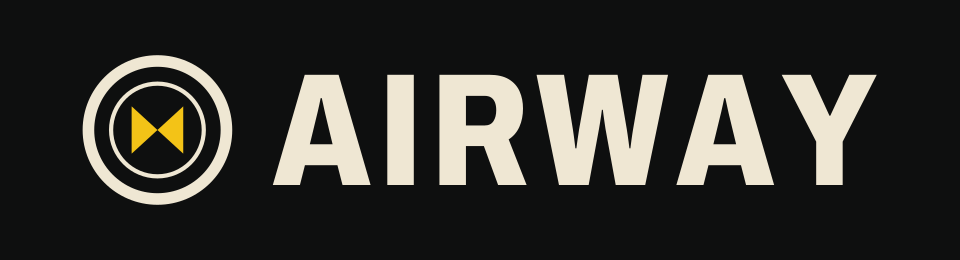

NOWY KIERUNEK · W PRZYGOTOWANIU

GLOBE ROUTE BUILDERCały świat.
Twoje połączenia.
Buduj sieć lotniczą na małym, żywym globusie. Łącz miasta, planuj przesiadki i pilnuj, by żaden hub nie stanął w korku. Samoloty latają same — strategia należy do Ciebie.
Zobacz gręWkrótce na Android i iOS
Zrzuty z bieżącej wersji gry · data premiery wkrótce

KARTA POKŁADOWA · AIRWAYTwoja sieć. Twoje decyzje.
TRASYRysuj na globusie
PASAŻEROWIEPrzesiadają się w hubach
CELUtrzymaj ruch
HALA ODLOTÓW / 01—05
Spójrz na świat z góry.
Pięć zrzutów ekranu z gry w obecnej wersji. Do premiery szczegóły mogą się jeszcze zmienić.
01 / AW–001NOC

02 / AW–002SIEĆ

03 / AW–003TYDZIEŃ

04 / AW–004MENU

05 / AW–005RAPORT

INSTRUKCJA LOTU / 04Nie sterujesz samolotami.
Nie sterujesz samolotami.
Sterujesz całym systemem.
Jedna trasa może odciążyć hub — albo skierować do niego tłum pasażerów. Buduj huby, przewiduj przesiadki i reaguj, zanim kolejki sparaliżują Twoją sieć.
Globus ze zdjęć satelitarnych z cyklem dnia i nocy, który zmienia ruch pasażerów, tygodniowe kontrakty i krótkie sesje strategiczne przygotowane z myślą o telefonach.
SIEĆ TRASHUBYGLOBUS 3D
TABLICA ODLOTÓW · STATUS PROJEKTU
Następny przystanek: premiera.
PLATFORMAKIERUNEKSTATUS
A/01ANDROIDWKRÓTCE
I/02iOSWKRÓTCE
Data wydania i linki do sklepów zostaną podane po ich potwierdzeniu.